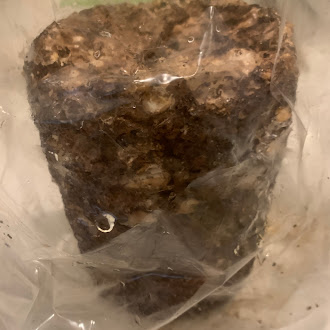
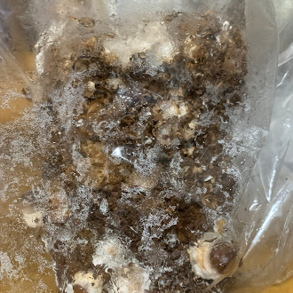
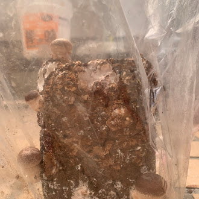
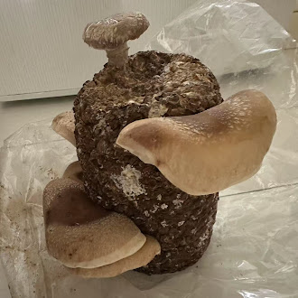
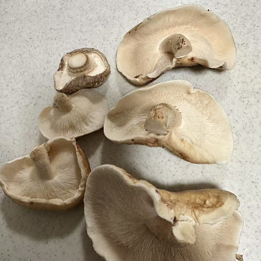
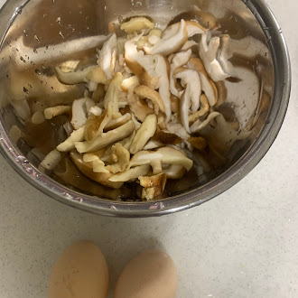
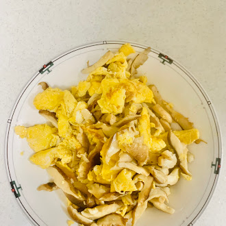

きのこの観察
１日目
 水やりの１回目です。まだ何も出ていません！出てくるのが待ち遠しいです！
６日目
 水やり３回目です。生えてきました！とっても小さい！
９日目
 水やり５回目です。前より成長しています！新しく生えてきたのものもいます！どこまで育つかな？
２５日目
 水やり１０回目？です。９日目と全然違います！収穫頃です。
収穫後
 収穫しました。全部で６個！今までで一番大きいものがとれました！！
Let's cooking!
材料

材料名 | 量 |
しいたけ | ６個 |
卵 | ２個 |
塩 | 少し |
ほんだし | 少し |
水 | 大さじ２ |
〜完成〜 〜調理法〜
１：きのこを切る ８：いったん皿に移す
２：卵を割り ９：きのこを炒める
３：ほんだしや水を入れる １０：塩を入れる
４：割った卵を混ぜる １１：卵も入れる
５：フライパンに火を付ける １２：一緒に炒める
６：油を入れる １３：皿に盛り付ける
７：卵を炒める